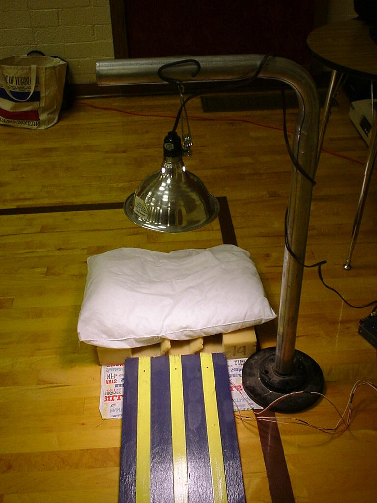

In the foreground, above the track you can see the light fixture that I use. It is a cheep hardware store clip on light with a 60 watt bulb. I always carry a spare bulb in my bag, just in case!
I was fortunate enough to have someone build a light stand for me from a brake rotor and some tailpipe. You can easily use a chair to serve the same purpose. Just make sure that the light sensors in the track are flooded with light from the incandescent bulb (see the discussion under 'The Track' on the main page).

Back to the main Pinewood Timer page